お客様の目的地（お勤め先など）から、候補の部屋までの所要時間と料金を1枚にまとめた「ご提案シート」を作ります。物件の情報も経路も、ボタンで取り込めます。
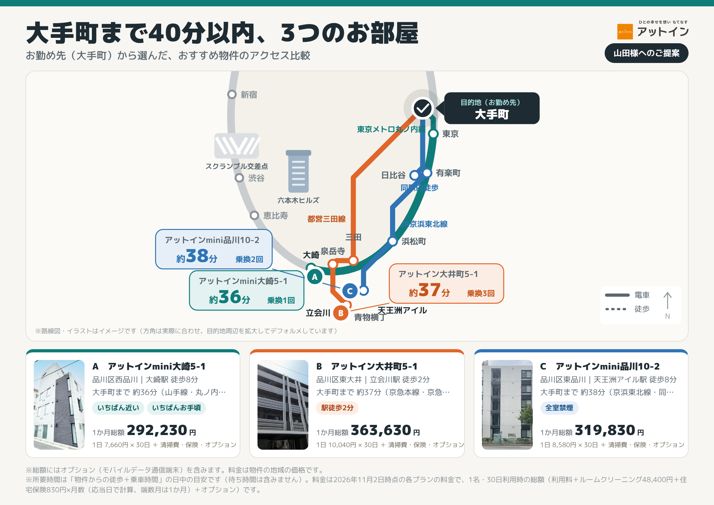
「プラン取込」「乗換取込」をブックマークバーに登録します。
MAGI で部屋を選び、公式サイトのプランページで「プラン取込」。
目的地を入れ、Yahoo!乗換案内で検索して「乗換取込」。
レンタル品・ペットなどを一覧から選ぶと、総額に入ります。
画像・PDFで保存。メール用の見積り文もコピーできます。
慣れれば、取込と経路の検索だけで作れます。
ツールを開くと、左上に「使い方・ブックマークレット」の欄があります。黒いボタン 🏠プラン取込 と 🚃乗換取込 を、マウスでつかんでブラウザのブックマークバーまで引っぱって離します（クリックではなくドラッグ）。
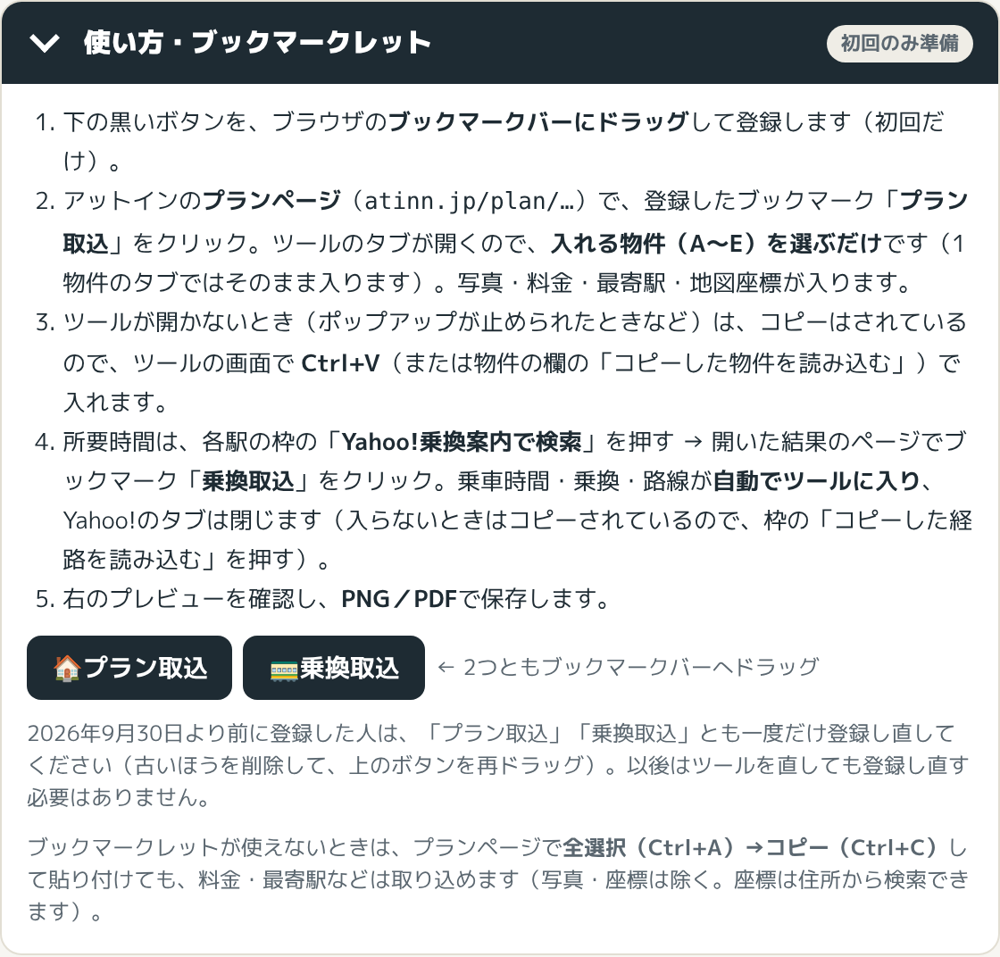
MAGI の「空室検索」で、表示期間・営業エリアなどを入れて検索し、ご提案する部屋（2〜5部屋）を決めます。
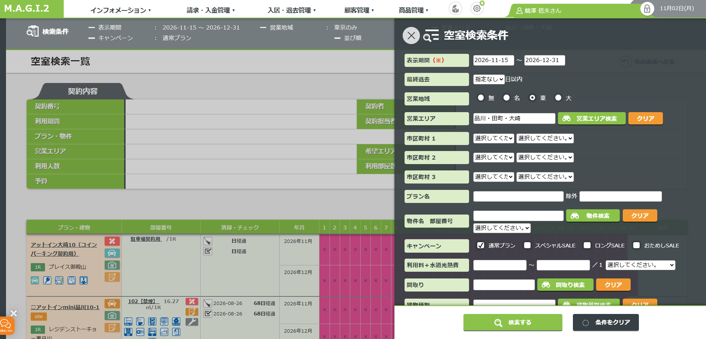
選んだ部屋のプランページ（atinn.jp/plan/番号）を開きます。例：大崎 atinn.jp/plan/15449 大井町 atinn.jp/plan/13177 品川 atinn.jp/plan/15393
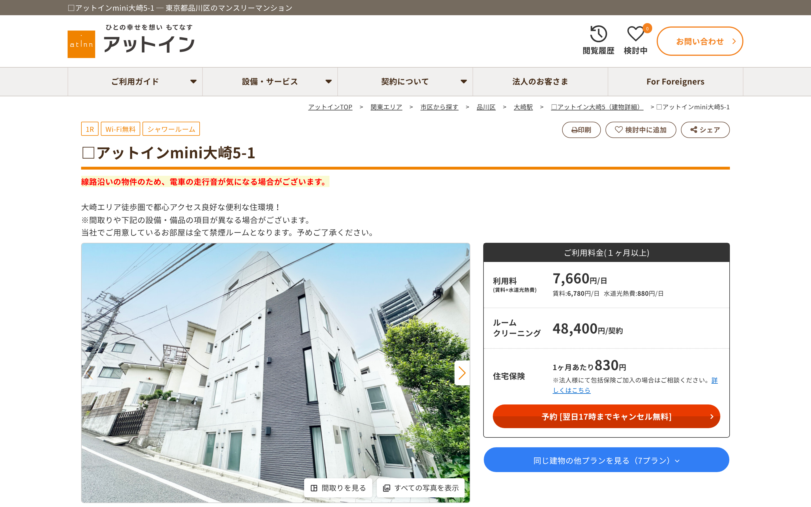
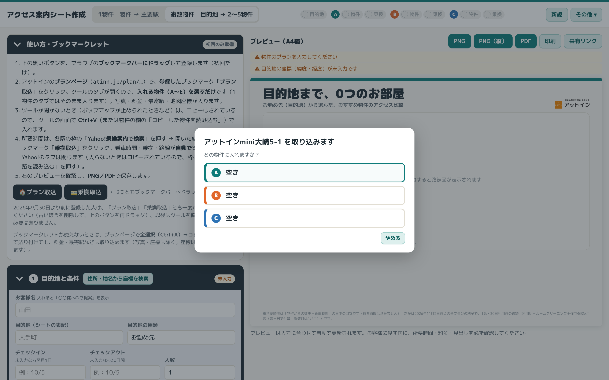
「1 目的地と条件」の欄に入れます。目的地に駅名や地名を入れると、地図の位置が自動で入ります。
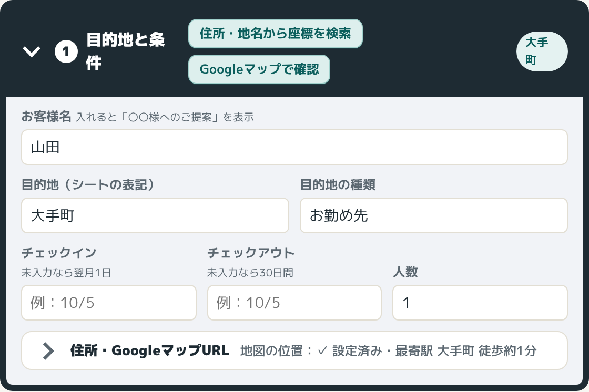
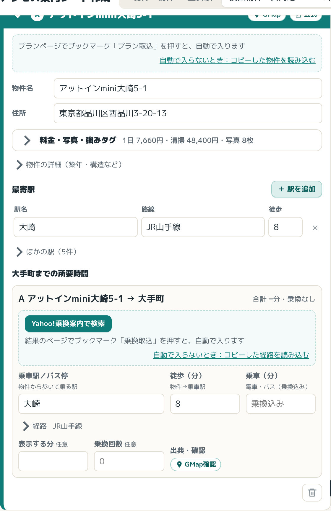
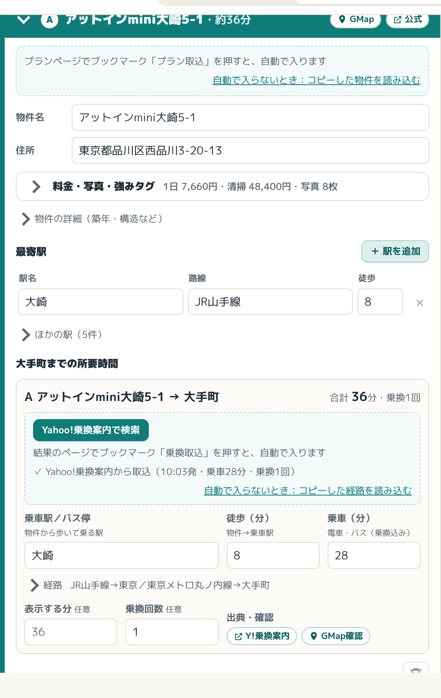
「オプション（レンタル品・ペット・割引など）」の欄で、＋ 一覧から追加 から選ぶと、物件の地域の料金で提案書とメール用テキストの総額に入ります。
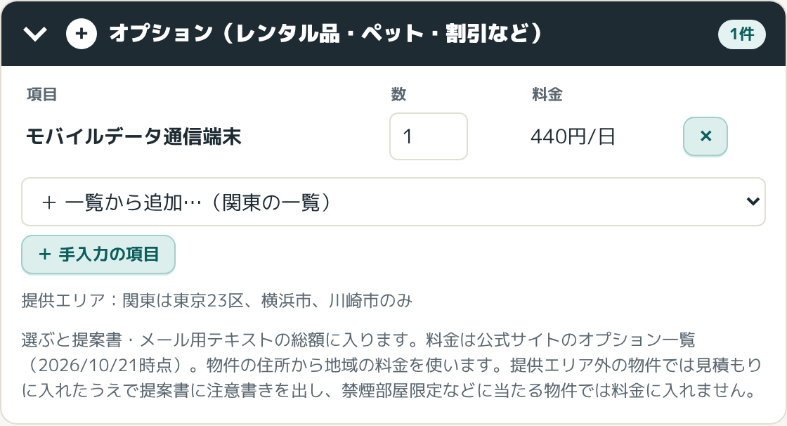
画面のいちばん上に、丸い印が並んでいます。入力が済んだところは ✓（緑）、まだのところは ○（グレー） になります。全部 ✓ になれば、提案書を作るのに必要な入力はそろっています。
複数物件のとき、物件の欄の下にあるチェックを入れると、提案書の2ページ目に物件どうしを比べる表が付きます。
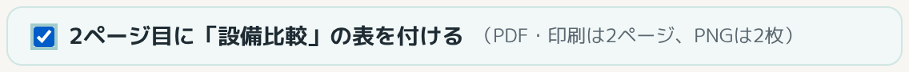
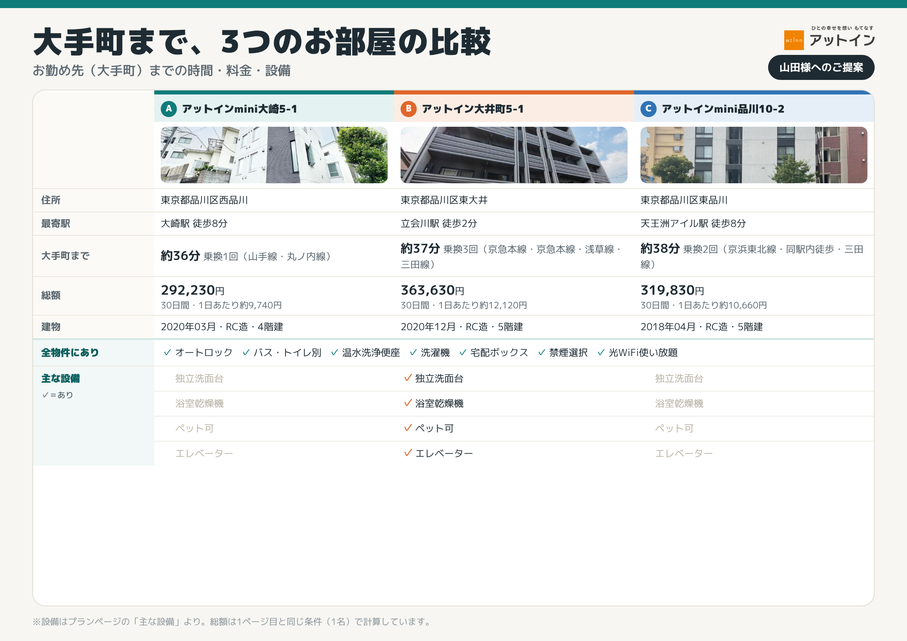
画面の右側にプレビューが出ます。黄色の注意が出ていたら内容を確認し、見出し・所要時間・料金を確かめてから保存します。
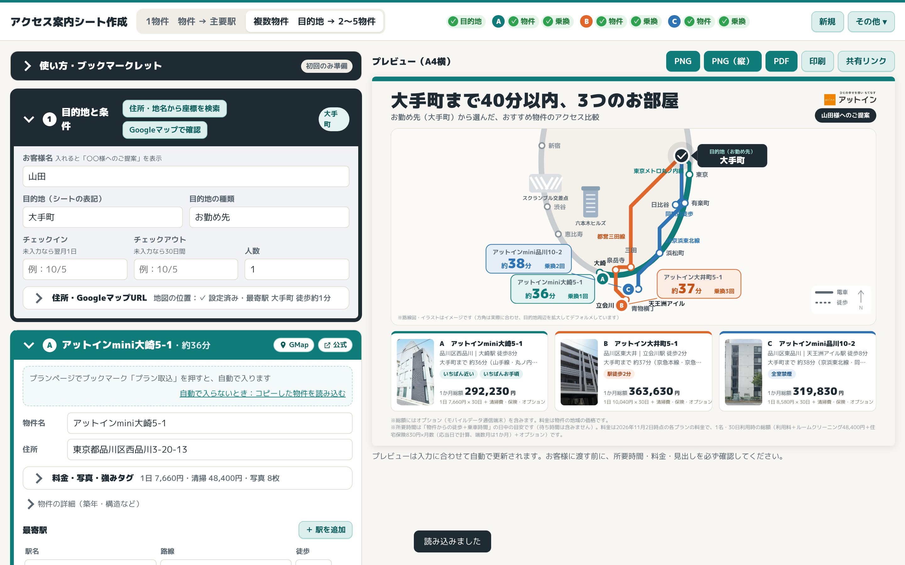
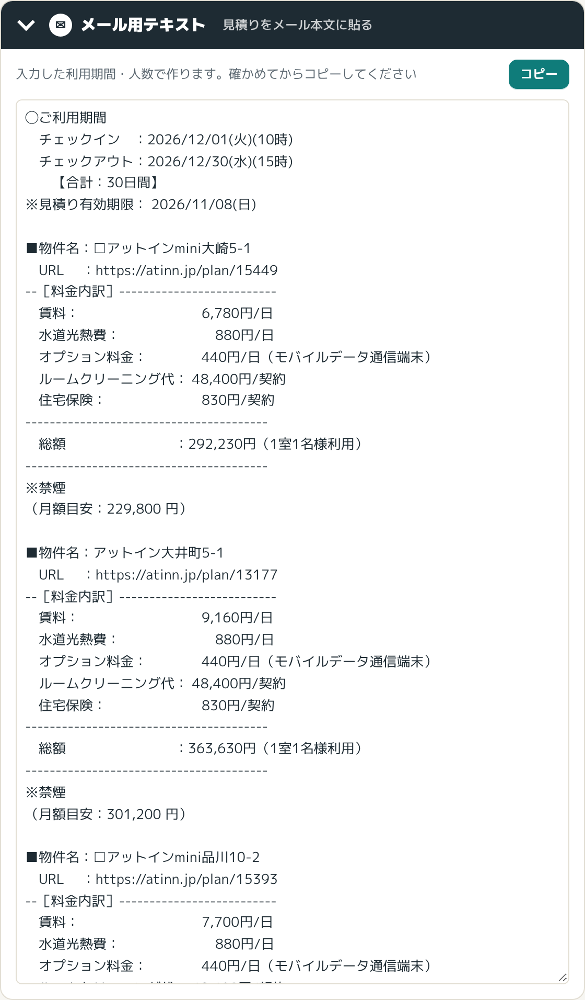
「メール用テキスト」の欄に、見積りExcel【一般用】と同じ形の料金内訳が出ます。コピー を押して、メール本文に貼ってください。オプションやキャンペーン条件も入ります。
| プラン取込で「Not Found」になる | 古いブックマークのままです。古い「プラン取込」「乗換取込」を削除し、ツールの使い方の欄からもう一度ドラッグしてください。 |
|---|---|
| プラン取込を押してもツールに切り替わらない | ポップアップが止められています。内容はコピーされているので、ツールで Ctrl + V を押してください。ブラウザのアドレスバー右の「ポップアップをブロックしました」から、atinn.jp を許可すると次からは切り替わります。 |
| 乗換取込で「経路を読み取れませんでした」 | Yahoo!乗換案内の「検索結果」のページで押しているか確認してください。トップページや時刻表のページでは読み取れません。 |
| 行き先が目的地から離れていると注意が出る | Yahoo!が同じ名前の別の場所で検索しています。目的地の住所か Google マップのアドレスを入れてから、もう一度「Yahoo!乗換案内で検索」を押してください。 |
| 地図に「座標が不明です」と出る | 表にない駅は、ツールが自動で位置を調べます。しばらく待っても出るときは、駅名の書き方（「〇〇駅」の「駅」なしなど）を確認してください。 |
| キャンペーン条件に当てはまらないと注意が出る | 利用開始日がキャンペーンの期間外です。定価で出すときは、物件の「料金・写真・強みタグ」でキャンペーンの料金欄を空にしてください。 |
| 前に作った内容に戻したい | ツールは開くたびに新しく始まります。前回の入力は、画面上の「前回の入力を復元」で戻せます。残しておきたいときは「その他」→「データ保存」でファイルに保存できます。 |
| 名古屋・大阪・京都の物件 | そのまま使えます。物件・目的地の場所から地域を自動で判断し、主要駅・地図・オプションの料金が切り替わります。 |